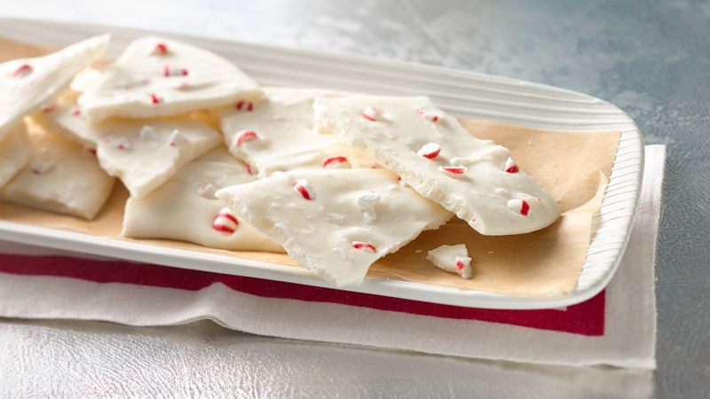

Peppermint Bark

Image taken from bettycrocker.com
Quick and effortless peppermint bark
A delicious recipe to utilize for holiday christmas bark
Ingredients
- 1-2 pounds of white chocolate
- Half a pound of crushed candy canes
Steps
- Melt white chocolate in the microwave or a double boiler
- Mix in half of your crushed candy canes into the melted white chocolate
- Evently spread the melted white chocolate and candy cane mixture into a line cookie sheet
- Add the remaining crushed candy canes onto the top of your still-warm bark
- Allow your bark to cool in the refrigerator until solid
- Enjoy